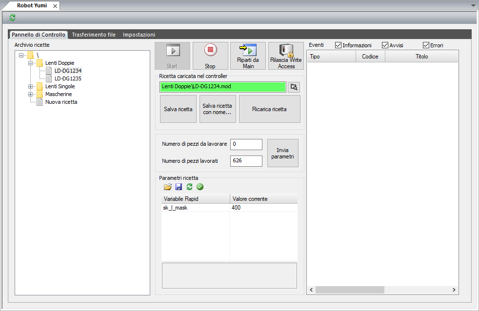

L’interfacciamento tra l’ambiente di controllo Skipper e il robot Yumi viene fornito come plugin di estensione di Skipper. Il plugin arricchisce il programma di due funzionalità:
Dal pannello HMI si ha accesso all’archivio delle ricette e a strumenti rapidi per il controllo del ciclo robot: l’avvio, l’arresto e la ripartenza. È inoltre visualizzato il log di sistema di Yumi per avere un rapido riscontro di eventuali segnalazioni. La comunicazione tra Skipper e robot viene effettuata attraverso la sua interfaccia Robot Web Services 2.0 API, pertanto è necessario predisporre una connessione ethernet tra il PC e la rete pubblica del controller.
